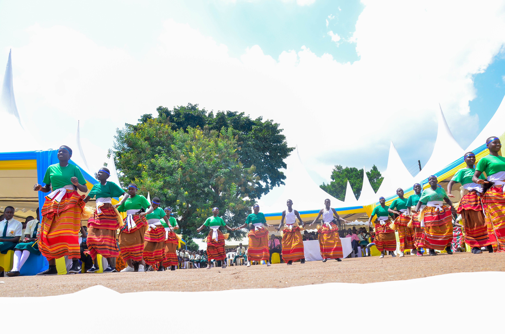
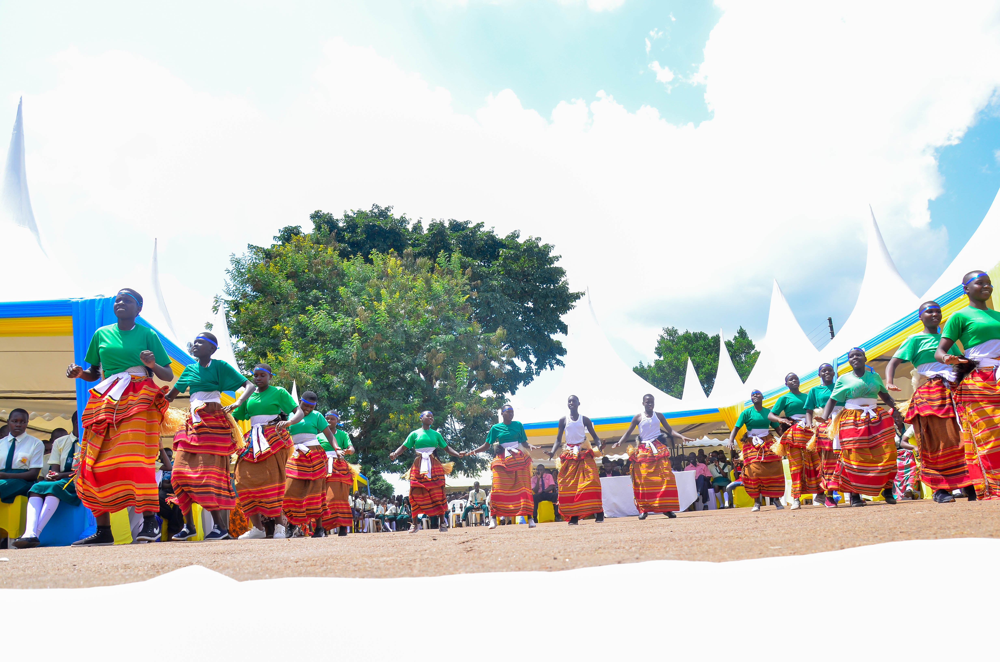
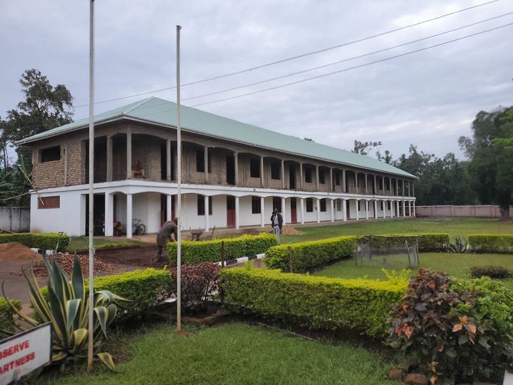

HOME
UGMSSK Welcomes You To Its website Platform
Here I bring you a great institution Uganda Martyrs’ SS Kayunga. It is located in Kayunga district,1 km from Kayunga town council in Namagabi B village. It has a lot of resources and infrastructure such as classrooms, good accommodation, library, good computer laboratory and good medical services to students. It has good trained teachers who are capable of teaching your students to their potential.

This is registered under the ministry of education and sports, and the registration number is U0816. We have all the levels i.e. O and A levels.
According to all sectors(academic, sports, entertainment, and health ), they are well equipped.
LITURGICAL

Our school is a catholic founded school which promotes morals and spiritual guidance to the students. We don’t isolate other religions and they are welcomed and respected.
ACADEMICS
We have well qualified teachers. Our school’s performance is at a high level. We are the best school in our district. The institution is capable of grooming students at national level. There are some of the best students who have ever existed in the school like Mpumbu Mark and Sseruwano Fredrick who attained 19 points in UACE.


DISCIPLINE
Our school discipline is highly recommended and promoted to all students. We do admit students who are well disciplined.
SPORTS AND ENTERTAINMENT
 

As they say work without play makes john a dull boy, so we provide our students sports and entertainment.
SCHOOL FACILITIES
Uganda Martyrs’ Secondary School has a lot of facilities like; buildings, standby generator, kitchen and water supply equipments. The school has classroom blocks such as; Mother Block, Mother Theresa, Conifero block, St. Paul Computer lab, Aquino De soz Science laboratory, St . Paul and Marie library. And even dormitories such as St. Jude, Sorbara, Erin Hawkins for girls and St. Peters, Maurice and Ann and Giovanni Moscatelo for boys.
The school has a beautiful pace where administration reside from . Its where the staff members and the head teacher, deputy head teacher, bursar and the secretary are found. The mother block is the first building to be built in the school, it was opened by the King(kabaka) of Buganda Ronald Muwenda Mutebi II. The school has a well-built kitchen where students receive their food from, for both O and A levers. The school has a great improved water supply equipment which help to to provide water to students like water reserve tanks and tap areas. Finally all these buildings are well construction and have a nice floor with terrazzo inside and windows with glasses inside them.STUDENTS' LEADERSHIP
We do allow students to participate in leadership through prefectorial body and class monitors. They are elected by their fellow students in such that they elect them on their own will.
WELFARE
Our diet is sustainable and of good quality. We feed our students on a well-balanced diet with delicious meals and more improved on weekends.